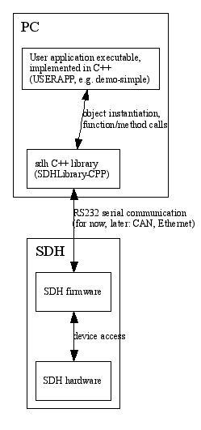

architecture.dox File Reference
Detailed Description
Short overview of the SDHLibrary-CPP and
SDH architecture.
- Naming convention:
- As a convention "SDH" (capital letters) is used to refer to the physical device, the three fingered SCHUNK Dexterous Hand, while "sdh" (small letters) refers to the PC-software that communicates with the physical SDH device. Within the "sdh" PC-software further entities can be distinguished: The C++ library SDHLibrary-CPP.so (on Linux) or SDHLibrary-CPP.dll (on Windows/cygwin) that contains the complete sdh library including the user interface class SDH::cSDH. This SDH::cSDH class will be described in detail below.
- Basic structure:
- The basic structure of the components looks like this:

- Basic architecture:
- There are several classes defined in SDHLibrary-CPP:
- SDH::cSDH the class used to communicate with the SDH. This class provides the functional interface of the SDH. It should be used by end users, as its interface is considered more stable.
- Other classes, like cSDHBase and cSDHSerial, are used by SDH::cSDH and provide more low level services and should NOT be used directly, as their interfaces are subject to change in future releases.
- cSDHLibraryException and derivatives: these are used when an exception is raised
- Example use:
- An exemplary use of the sdh module in a user application in C++ might look like this:
...
include <sdh.h>
cSDH hand;
hand.OpenRS232();
std::vector<double> faa = hand.GetFingerActualAngle( 0 );
std::vector<double> fta = faa;
fta[1] -= 10;
fta[2] -= 10;
hand.SetFingerTargetAngle( 0, fta );
hand.MoveFinger( 0 );
hand.Close();
Real example code is available in the demo-*.cpp code files, see e.g.
 1.5.5
1.5.5